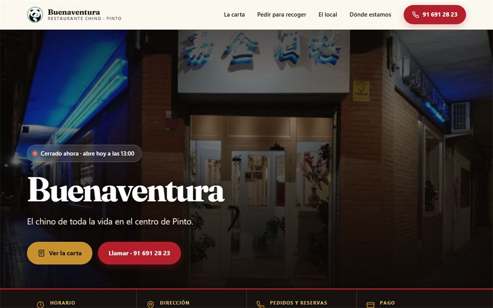

Web del restaurante Buenaventura (Pinto)Buenaventura restaurant website (Pinto)
Web nueva para un restaurante, hecha en solitario de principio a fin: diseño, carta real con buscador, aviso de «abierto ahora», textos legales y publicación con el dominio propio del restaurante.
A new website for a restaurant, built solo from start to finish: design, the real menu with search, an “open now” notice, legal pages and launch on the restaurant’s own domain.
- Sustituye una web de pago de más de 100 €/año gestionada por un tercero.
- Traslado del dominio (en uso desde 2009) conservando el correo y las direcciones antiguas.
- Conectada a la ficha de Google Business.
- Imágenes un 64 % más ligeras, contraste AA de WCAG y 0 enlaces rotos.
- Replaces a paid, third-party website that cost over €100 a year.
- Moved the domain (in use since 2009) while keeping email and old addresses working.
- Connected to the restaurant’s Google Business profile.
- Images 64% lighter, WCAG AA contrast and 0 broken links.